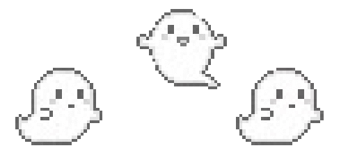

<!DOCTYPE html>
<html>
<head>
    <title id = "index.html">﹒⌗﹒about ⸝⸝</title>
    <link rel="stylesheet" href="style.css">
    <link href="https://fonts.cdnfonts.com/css/the-aesthetic-essential" rel="stylesheet">
    <link rel="stylesheet" href="https://cdnjs.cloudflare.com/ajax/libs/font-awesome/4.7.0/css/font-awesome.min.css">
                
</head>
</html>
<body>
    <header>
        <nav>
            <a href="#"><i class="fa fa-sort-asc"></i></a>
            <a href="index.html"><i class="fa fa-fw fa-home"></i></a>
            <a href="shop.html"><i class="	fa fa-shopping-basket"></i></a>
            <a href="about.html"><i class="fa fa-circle-o-notch"></i></a>
        </nav>
        <nav>
            <a href="shop.html">shop</a>
            <a href="index.html">home</a>
            <a href="recommended.html">recommended</a>
        </nav>
        <span class ="banner">kombu-chan</span>
    </header>
    <section class = "nav2">
        <nav>
            <div class="p"><marquee>୨୧┊꒰welcome to <i>kombu-chan</i>'s catalogue.ᐟ꒱ ♡ ⑅˚₊</marquee></div>
            <a href="about.html"> about us   —————<br><i class="	fa fa-user-circle"></i></a>
            <br>
            <a href="shop.html"> cart—————<br><i class="fa fa-shopping-cart"></i></a>
            <br>
            <a href="about.html#footer"> social————<i class="fa fa-envelope-open-o"></i></a>
            <section class = "pita"></section>
            
        </nav>
    </section>
    <section class = "about">
        <h2>✶  ﹕  a tea sent by the angels</h2>
        <section class = "gambar"></section>
        <h1 class="warna-pink">╰┈➤ netlore.net/kombu-chan</h1>
        
        <h3>𝄃𝄃𝄂𝄂𝄀𝄁𝄃𝄂𝄂𝄃 kombu-chan™ ㅤ╳ ㅤ<i>est. 2025</i>ㅤ₊‧</h3>
        <p>kombu-chan™, to put it simply, is a tea; but it's no ordinary tea. This one tea is a bit special; it's homemade;<br> brewed with love and care in her own kitchen. Kombucha is a fermented tea drink, typically sweetened with<br> sugar, and fermented using a culture of bacteria and yeast (SCOBY). This fermentation process produces a <br>slightly fizzy and tangy beverage with a mild vinegar flavor. It's often enjoyed as a healthy alternative to <br>sugary sodas due to its probiotic content and potential health benefits. </p>
        <br>
        
            <p><i>kombu-chan™, sederhananya, adalah teh; tetapi bukan teh biasa. Teh yang satu ini sedikit istimewa; dibuat sendiri;<br> diseduh dengan cinta dan perhatian di dapurnya sendiri. Kombucha adalah minuman teh yang difermentasi, biasanya dimaniskan dengan<br> gula, dan difermentasi menggunakan kultur bakteri dan ragi (SCOBY). Proses fermentasi ini menghasilkan <br>minuman yang sedikit bersoda dan asam dengan rasa cuka yang ringan. Minuman ini sering dinikmati sebagai alternatif yang sehat untuk <br>soda manis karena kandungan probiotik dan potensi manfaat kesehatannya.</p></i>
            <h3>Click the button below to learn more . .</h3>
        <p>▼▼▼▼▼▼▼▼▼▼▼▼▼▼▼▼</p>
            <div class = "harga"><a href="shop.html">
            <section class = "shop-now">Shop now.ᐟ</section> 
            </a></div>
            <br>
            
        <div id="overlay"></div>
      </section>

     
        
        
        
    </div>
    <section>
        <footer>
            <section class = "email">
                <div>
                    <h1>for business inquiries please contact :</h1>
                    <li>email : @palamom17@gmail.com ノノ phone : 083866203007 </li>
                    
                </div>
            </section>
            <nav id = footer>
                    <a href="#"><i class="fa fa-instagram"></i> Instagram</a>
                    <a href="#"><i class="fa fa-twitter"></i> Twitter</a>
                    <a href="#"><i class="fa fa-facebook"></i> Facebook</a>
                    <a href="#"><i class="fa fa-youtube"></i> Youtube</a>   
                      
            </nav>
            <br>
            
        </footer>
    </section>
    

    
    
    
</body>